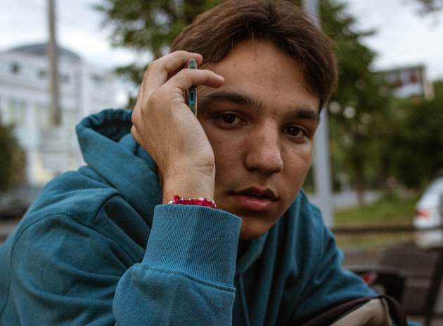

Обо мне
Привет! Меня зовут Самир
Учусь и изучаю этот мир, а фотография - это надежный инструмент, который помогает мне анализировать происходящее вокруг.
Учеба
Уже год как уехал из родного города Иваново и учусь в университете в Казани (КАИ).
Хобби
Интересуюсь многими вещами, например:
изучаю французский язык;
читаю художественную и публицистическую литературу;
играю на гитаре;
фотографирую;
хожу на выставки;
катаюсь на велосипеде и др.
